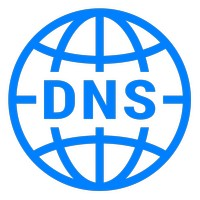
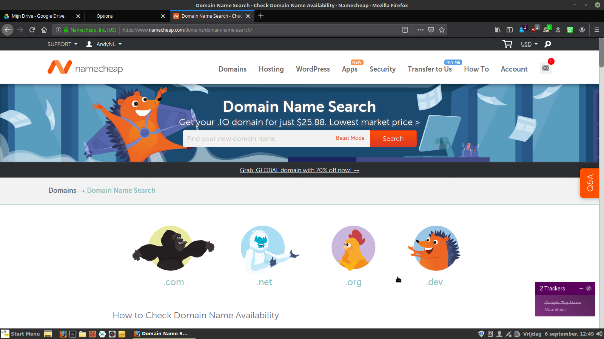
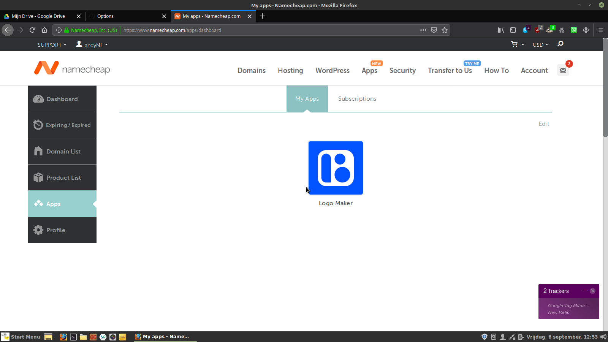

The Web
Domeinnaam
 Een domeinnaam, of 'domein', is een naam in het Domain Name System (DNS), het naamgevingssysteem op internet waarmee computers zoals webservers en mailservers alsmede bepaalde diensten en toepassingen kunnen worden geïdentificeerd.
De domeinnaam verwijst doorgaans naar een IP-adres dat uit nummers bestaat, maar kan ook andere technische verwijzingen omvatten. Het DNS functioneert zodoende als het ware als een telefoongids van het internet.
Een goede domeinnaam is treffend en eenvoudig te onthouden. Zowel bedrijven als particulieren maken er intensief gebruik van, zowel om te vinden als om gevonden te worden op internet.
→ zie: Wikipedia Domeinnaam
Registreren domeinnaam
Het tegen betaling vastleggen van een domein gaat via een commercieel bedrijf, een "Registrar". Niet elke Registrar verkoopt alle TLD’s; dat is de extentie van de domein zoals .nl en .com etc. Dat is belangrijk te weten want als gebruiker een vrije domeinnaam zoekt dan kan dan het “niet verkopen van TLD” en reden zijn dat vrije opties niet worden gepresenteerd!
NameCheap heeft lage prijzen maar geen ".nl"
→ zie: zoek vrije naam bij NameCheap
Google Domains is in veel gevallen duurder maar verder een goede aanbieder
→ zie: zoek vrije naam bij Google Domains
- Technische verwijzingen
-
Na registreren kan worden ingelogd op website van Registrar om naar het controle panel (Cpanel) te gaan. Dat Cpanel stelt eigenaar van domein in staat om technische verwijzingen aan te brengen.
Cpanel records
- SOA Start-Of-Authority, (sub)domein, TTL, serienummer, primaire server, responsible person
- A voor aangeven van het IPv4-adres alwaar landingspagina index.html staat
- AAAA gelijk aan A maar dan voor het evt IPv6-adres
- CNAME Canonical name voor koppelen van domeinnaam aan het www-domein
- PTR voor koppelen van domein naar IPv4- of IPv6-adres tbv omgekeerde lookups
- MX voor aangeven van het IP adres van mailservers van domein - Aandachtspunten
-
- Vastleggen van een domein gaat per jaar of veelvoud daarvan
- Prijzen van TLD’s verschillen naar gelang marktwerking
- NameCheap heeft standaard gratis Identiteit blokkade van eigenaar van domein
- Dat publieke afschermen van eigennaam, telefoonnummer, woonadres, email etc is belangrijk - Voor domein kopen benodigd
-
- Creativiteit want veel namen zijn al bezet
- Creditcard voor betalen
- Emailadres voor verplichte controle
- Emailadres tbv 2x factor authenticatie inloggen op Cpanel DNS
- Emailadres tbv ontvangen facturen, meldingen etc - DOEN
-
 Vanwege lage prijs is NameCheap als voorbeeld
- Check of Registrar gewenste TLD verkoopt; als bijv .nl niet als product er is, zoek dan andere Registrar
- Ingeval wel beoogde TLD als product is opgenomen zoek dan op gewenste naam van domein
- Indien gewenste domein is gevonden doorloop dan het aankoopproces
- Enable optie “block credentilals for privicay” tbv ongewenste aandacht van derden
- Gereedhouden: creditcard en emailadres - DOEN
-
 Na registratie van domein verschijnt scherm met linker kolom enkele opties
- Kies App – en dan kies LogoMaker
- In App worden voorkeuren gevraagd: gewenste naam (kan zonder TLD vermelding), slagzin, kleur, lettertype, icoon
- De App geeft gegenereerde mogelijkheden en kies de meest visueel aansprekelijke
- De App geeft optie voor downloaden: doen – want later nodig
- In donwload folder zit .zip file – extract deze in nieuwe subdirectory “logo” en een setje van files wordt zichtbaar
- Files bevatten oa: icoon en logo – in verschillende varianten voor divers gebruik
Domein geregistreerd
Als het domein is geregistreerd is de opstartfase afgerond. Het is gebruikelijk dat bekende search engines zoals Google, DuckDuckGo, Bing etc. een melding krijgen van het nieuwe domein, en deze domein opnemen in hun webcrawler to-do-list. Hoe dat verder werkt:
→ zie: Wikipedia Zoekmachine
Mocht de App om logo te maken bij NameCheap zijn gebruikt, of andere soortgelijke App elders, dan kan dat materiaal bij content creation worden ingezet en gebruikt. Als nog geen digitale "huisstijl" dan kan dat prima bij content creation aan bod komen. Wat betreft invulling van technische verwijzingen als hiervoor bij Cpanel genoemd, dat komt later verder aan de orde bij CMS, website builder en full stack development.
Aanmelding diverse media
Aanvullend nà vastleggen domein tbv borging mondiale aanwezigheid en herkenbaarheid van unieke naam. Bijvoorbeeld vastleggen van de naam op diverse sociale media, wat sowieso is aan te bevelen ook al zal het niet worden gebruikt. Want door het vastleggen wordt voorkomen dat anderen/derden dat dan wel doen met aldus oneigenlijk gebruikmaken van die naam
Denk bijvoorveeld aan:
- Bijwerken account LinkedIn
- Aanmaken account GitHub - zie verder in deze guide bij profiel 4 GitHub Pages
- Aanmaken account bij Twitter
- Aanmaken account bij Instagram
- Aanmaken Facebook pagina
- Aanmaken YouTube Channel
- Aanmaken account Discord
- Enzovoorts